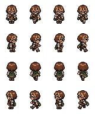
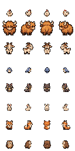

Serene Village Revamped
By LimeZu · CC BY 4.0
Tiles and houses extracted into a game atlas. Roof components also used in the lighthouse.
Original creator page ↗ · Licence ↗Six freely downloaded environment sources are used in this game. No paid editions or unverified samples are included. The assets remain credited to their original creators.
By LimeZu · CC BY 4.0
Tiles and houses extracted into a game atlas. Roof components also used in the lighthouse.
Original creator page ↗ · Licence ↗By Pipoya · Creator terms: personal/commercial use and editing; no asset redistribution.
Stone, walls and furniture extracted for the game, with complete source crops.
Original creator page ↗By Mroker · Creator terms: personal/commercial use and modification.
Selected pine and small plant sprites extracted; pine scaled with nearest-neighbour sampling.
Original creator page ↗By karsiori · CC0 1.0
Selected flower and bush sprites scaled for the overworld.
Original creator page ↗ · Licence ↗By reodesuxz · Creator terms: personal/commercial projects and modification; no standalone asset redistribution.
Selected floors, windows, market stalls and dock props packed into the runtime atlas.
Original creator page ↗By MinZinn · CC BY 4.0
Two sailboat orientations extracted and scaled for dock and ferry scenes.
Original creator page ↗ · Licence ↗The user-provided couple illustration defines both characters. Amaal’s playable sprite preserves her round glasses, chestnut bob, green cloak, brown armour and silver plates. Raeez’s appearance is recorded for his story scenes.

Amaal’s sprite sheet was generated from the supplied reference, then sliced, resized and aligned to a shared ground point. It is an adaptation for a small top-down character, not an exact cutout of the illustration.
The home tower, animal barn, themed town buildings, garden props, animals and 104 resident designs were generated for Blooming Quest. The residents live across seven towns; Rosepetal is Amaal and Raeez’s private home estate. Every resident follows Amaal’s reference-based proportions, warm pixel shading and dark outlines. The sheets are cropped and aligned to the same game scale. Residents use four directional standing poses with subtle step motion; Amaal has sixteen walk frames plus 64 idle and katana action poses.


Sixteen designs come from freely available creator packs. Directional movement and source attack sequences are cropped, resized with pixel sampling, and aligned for this game. Single-view creatures use only their supplied poses. The minotaur sampler provides a single idle pose.
Monster Pack 40 — Admurin
Personal and commercial game use; modification allowed; no standalone asset redistribution; credit appreciated. No NFTs or training AI.
Monster Pack 95 — Admurin
Personal and commercial game use; modification allowed; no standalone asset redistribution; credit appreciated. No NFTs or training AI.
Original Orcs — Zenedark
Commercial and non-commercial games allowed. Editing for game projects allowed. No standalone redistribution, templates or NFTs. Credit appreciated.
Insect Enemies — Ponk
Creator page specifies CC BY4.0; creator comment also says free use. · Licence
Monster Pack 66 — Admurin
Personal and commercial game use; modification allowed; no standalone asset redistribution; credit appreciated. No NFTs or training AI.
Monster Pack 21 — Admurin
Personal and commercial game use; modification allowed; no standalone asset redistribution; credit appreciated. No NFTs or training AI.
Monster Pack Free — Admurin
Personal and commercial game use; modification allowed; no standalone asset redistribution; credit appreciated. No NFTs or training AI.
FREE Monster Pack - Animated Pixel Art (64x64) — miks
Commercial and personal game use and project modification allowed. Do not redistribute raw assets, claim ownership, or use for AI training. Credit appreciated.
RPG Pixel Art Sampler Free v4.1 — RetroLabStudioCo
Free personal and commercial game/project use. Modification allowed; no standalone redistribution; credit appreciated. Creator states original hand-authored procedural pixel art without AI image generation.
Creator terms and modification notes are retained with the game. Source files are used as game assets, not distributed as a separate asset library.
Map A was selected by the user. Its background artwork was generated for Blooming Quest; the town labels, route highlights and development travel controls are interactive game code. Amaal’s idle and katana action poses, estate mushrooms and practice dummies were generated for this game. Fruit and mushroom plants have ripe and harvested views. NPC movement, gestures and idle animation use the existing character art with procedural animation. Every one of the 104 residents uses a different model across the entire world.
Daily routines use an original local game-AI planner with finite states and weighted pathfinding. It has no external API, account requirement or runtime service fee.
Map layouts and game code prepared for Blooming Quest. Sound effects are synthesized in the browser; no artist recordings are embedded.